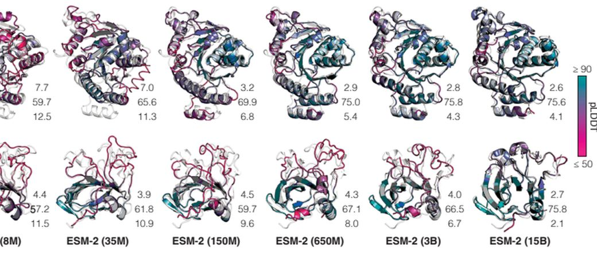

4.1尚未解决的问题
复合物与界面
AF2 对蛋白—蛋白界面的预测仍不稳定；AF3 在抗原—抗体任务成功率约 63%，且单次预测波动明显，需要多次采样[5,10]。
无序区与动态构象
模型倾向把无序区预测为紧凑折叠，且只给单一静态结构；AF3 报告少量手性错误，2000 残基以上复合物偶发空间冲突[5,13]。
侧链、配体与修饰
主链已接近实验水平，而侧链构象、金属配位、共价修饰与小分子结合位点仍依赖专门方法或实验确证[5,10]。
评估与验证
置信度指标只能提示可信程度，低置信区域必须以实验验证；预测改变的是结构解析的起点，而不是终点[5,10]。
4.2语言模型：从 MSA 依赖到单序列预测

拖动滑块改变模型规模，数值取自文献 [13] 图 1F 的两个靶标：
7Q0A（高置信靶标）
T1056（低同源靶标）
结论：在完全不使用 MSA 的条件下，把语言模型从 8M 扩到 15B，主链误差持续下降、置信度持续上升；15B 模型已用于 ESM 宏基因组图谱中 6.17 亿条序列的批量预测，其中 2.25 亿条为高置信度[13]。
4.3未来方向
从头设计与功能定制
以 RFdiffusion 等扩散模型按指定拓扑与功能位点生成新骨架，再由序列设计模型给出氨基酸序列[12]。
动态构象与光谱描述
从单一静态结构转向构象系综；结合分子动力学与光谱描述符，刻画变构、折叠路径与配体诱导变化[7]。
摆脱 MSA 依赖
以大规模蛋白质语言模型直接从单条序列推断结构，缓解孤儿蛋白与人工设计序列缺乏同源序列的问题[13]。
AI 与实验的闭环
在晶体学与冷冻电镜流程中自动建模、自动修正；实验数据反过来持续改进模型[4]。
这些方向的共同前提是：模型输出的可信度必须可被表达——不确定度、适用域与失败模式，与平均精度同等重要[5,7]。
4.4科学与社会
开放与可重复
AF2 论文与代码公开，使结果可复现；AF3 未开放训练代码，逾千名学者联署公开信质疑。若关键实现无法获得，独立验证与改进就会被限制，这与“可重复性”原则相悖[5,10]。
学术与产业
结构预测已被广泛用于药物发现、酶工程与合成生物学，改变了研究分工，也让算力与数据成为新的门槛[4,6]。
双重用途与生物安全
设计能力的普及带来双重用途风险：同一套工具既能设计药物，也可能被用于增强病原体。需要技术护栏、发布审查与社区规范共同作用[5]。
教育与普及
预测与设计工具进入课堂，使“结构—功能”关系更直观；同时也要求学生理解模型的适用边界，而不是把输出当作结论[6,7]。